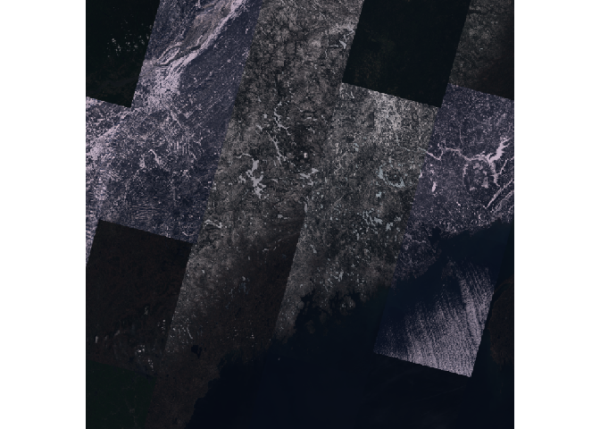

The goal of {arcgis} is to provide an R interface to the ArcGIS REST API
Installation
You can install the development version of arcgis like so:
remotes::install_github("R-ArcGIS/api-interface")Basic functionality
-
arc_open()creates a reference to a dataset will return 1 of 4 types of objects:FeatureLayerTableFeatureServerImageServer
Create a FeatureLayer object.
library(arcgis)
# define the feature layer url
furl <- "https://services.arcgis.com/P3ePLMYs2RVChkJx/ArcGIS/rest/services/USA_Counties_Generalized_Boundaries/FeatureServer/0"
county_fl <- arc_open(furl)
county_fl
#> <FeatureLayer <3143 features, 12 fields>>
#> Name: USA Counties - Generalized
#> Geometry Type: esriGeometryPolygon
#> CRS: 4326
#> Capabilities: Query,ExtractQuery the feature layer object and return an sf object using arc_select(). If no arguments are provided to arc_select() the entire feature layer is returned in memory as an sf object.
Utilize the fields and where arguments to return a subset of columns and rows respectively.
-
fieldstakes a character vector of column names -
wheretakes a simple SQL where clause
Return counties with population greater than 1,000,000.
arc_select(
county_fl,
fields = c("state_abbr", "population"),
where = "population > 1000000"
)
#> Simple feature collection with 49 features and 2 fields
#> Geometry type: MULTIPOLYGON
#> Dimension: XY
#> Bounding box: xmin: -158.2674 ymin: 21.24986 xmax: -71.02671 ymax: 47.77552
#> Geodetic CRS: WGS 84
#> First 10 features:
#> STATE_ABBR POPULATION geometry
#> 1 AZ 4420568 MULTIPOLYGON (((-111.0425 3...
#> 2 AZ 1043433 MULTIPOLYGON (((-110.4522 3...
#> 3 CA 1682353 MULTIPOLYGON (((-121.4721 3...
#> 4 CA 1165927 MULTIPOLYGON (((-122.3076 3...
#> 5 CA 1008654 MULTIPOLYGON (((-120.6636 3...
#> 6 CA 10014009 MULTIPOLYGON (((-118.1067 3...
#> 7 CA 3186989 MULTIPOLYGON (((-117.509 33...
#> 8 CA 2418185 MULTIPOLYGON (((-116.0824 3...
#> 9 CA 1585055 MULTIPOLYGON (((-121.6652 3...
#> 10 CA 2181654 MULTIPOLYGON (((-117.7832 3...Note you can also provide an sfc/sfg object to the filter_geom argument to perform a spatial filter. Note that this is limited to only one object. See documentation for more (?arc_select).
SpatRaster object from the terra package can be extracted from an ImageServer by using arc_raster().
arc_raster() requires a bbox class object from the sf package to define the area to be extracted. Optionally can specify the width and height of the resultant image. Use format to define what type of image is returned
img_url <- "https://landsat2.arcgis.com/arcgis/rest/services/Landsat/MS/ImageServer"
landsat <- arc_open(img_url)
res <- arc_raster(landsat, xmin = -71, ymin = 43, xmax = -67, ymax = 47.5, bbox_crs = 4326, height = 1000, width = 1000)
terra::plotRGB(res, 4, 3, 2, scale = max(landsat[["maxValues"]]))
Benchmarks
| expression | min | median | itr/sec | mem_alloc | total_time |
|---|---|---|---|---|---|
| arc.data2sf(arc.select(arc.open(furl))) | 0.8447476 | 0.8715339 | 1.1319673 | 22042464 | 8.834177 |
| arc_select(arc_open(furl)) | 0.9293584 | 1.0583557 | 0.8823662 | 19360960 | 11.333163 |
| esri2sf::esri2sf(furl) | 7.0152159 | 7.7417628 | 0.1290807 | 27235736 | 77.470929 |
| arcpullr::get_spatial_layer(furl) | 5.4766765 | 6.2454313 | 0.1587969 | 17681280 | 62.973502 |